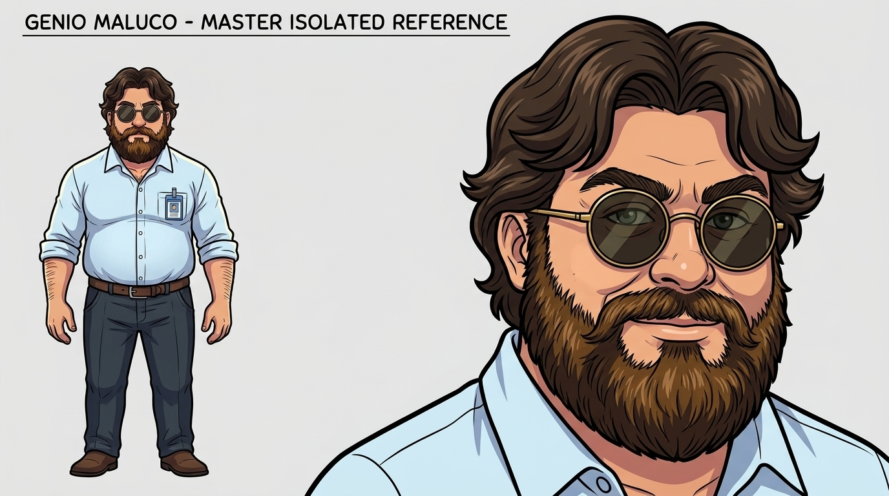
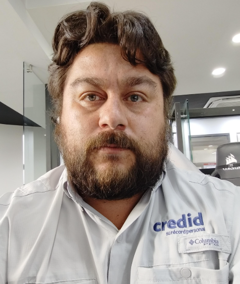
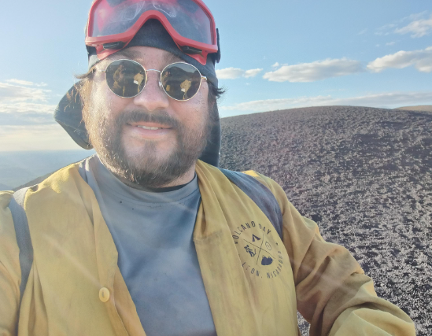
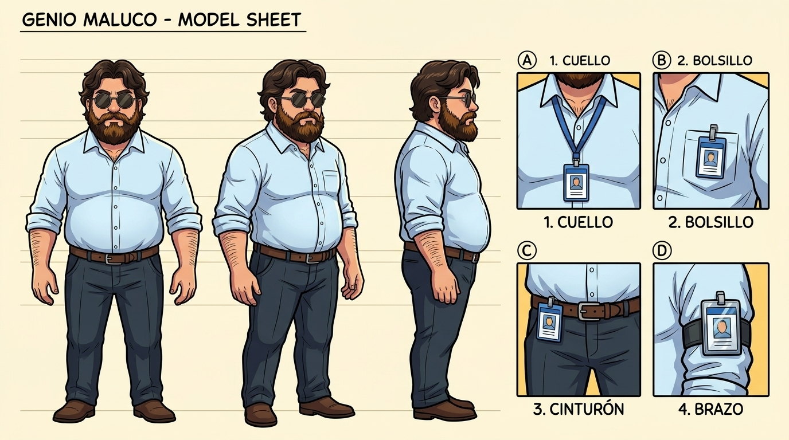

GENIO MALUCO (PROTAGONISTA CANÓNICO)
Comediante de Stand-Up, sobreviviente del bochorno en San Pedro y jugador de básquetbol con gafete eterno.
- 💪 FÍSICO (BÁSQUETBOL): Mide 1.68 m. Es gordito (con pancita redonda de treintañero), pero muy fuerte y macizo por practicar básquetbol: espalda y hombros anchos, pecho firme y antebrazos gruesos y musculosos.
- 🧔 ROSTRO, CABELLO Y BARBA: Cabello castaño oscuro abundante y ondulado partido al medio con ondas voluminosas arriba. Cejas pobladas expresivas y barba completa más gruesa, tupida y cerrada (castaña oscura con matices cálidos en el bigote y mentón).
- 🕶️ LENTES OSCUROS REDONDOS: Usa siempre lentes de sol redondos oscuros con montura metálica delgada. En momentos de shock o disociación pueden deslizarse levemente por la nariz mostrando sus ojos en espiral.
- 👔 ROPA INVARIABLE (SIEMPRE LA MISMA): Camisa de oficina color celeste hielo claro (`#CFE4F5`) con bolsillo en el pecho y mangas arremangadas al codo; pantalón de vestir gris carbón / azul marino oscuro (`#262F3D`) con cinturón de cuero café (`#5C3A21`).
🪪 REGLA DE ORO DEL GAFETE (4 POSICIONES OFICIALES)
El personaje anda con su gafete corporativo en TODO momento en cualquiera de estas 4 ubicaciones:
🎨 PALETA DE COLORES FIJA DEL PERSONAJE E INTERFAZ

img/genio-maluco/04-avatar-aislado.jpg
📸 FOTOS REALES DE REFERENCIA (BASE DEL DISEÑO)


Selecciona cualquiera de las 4 láminas maestras guardadas en img/genio-maluco/ para consultar los giros de cuerpo, esqueletos de acción y ángulos de cámara en Modo Selfie:

Vista frontal, 3/4 y perfil con proporciones de 1.68 m (fuerte-gordito de básquetbol) y detalle del gafete en cuello, bolsillo, pantalón y brazo.
img/genio-maluco/01-model-sheet.jpg
🦴 FORMATOS DE ESQUELETOS Y POSES PREDEFINIDAS
🤳 FRAMES DE CARA Y PERFILES EN MODO SELFIE
Para no gastar tokens describiendo desde cero al personaje en cada episodio, pasa como imagen adjunta img/genio-maluco/04-avatar-aislado.jpg (o 01-model-sheet.jpg) y usa este bloque compacto:
Todas las ilustraciones del Web Cómic ya fueron actualizadas con el diseño oficial de Genio Maluco (clic en cualquiera para ver en grande):


Registro centralizado de personajes secundarios para reutilizar en futuros episodios manteniendo el mismo estilo de arte: